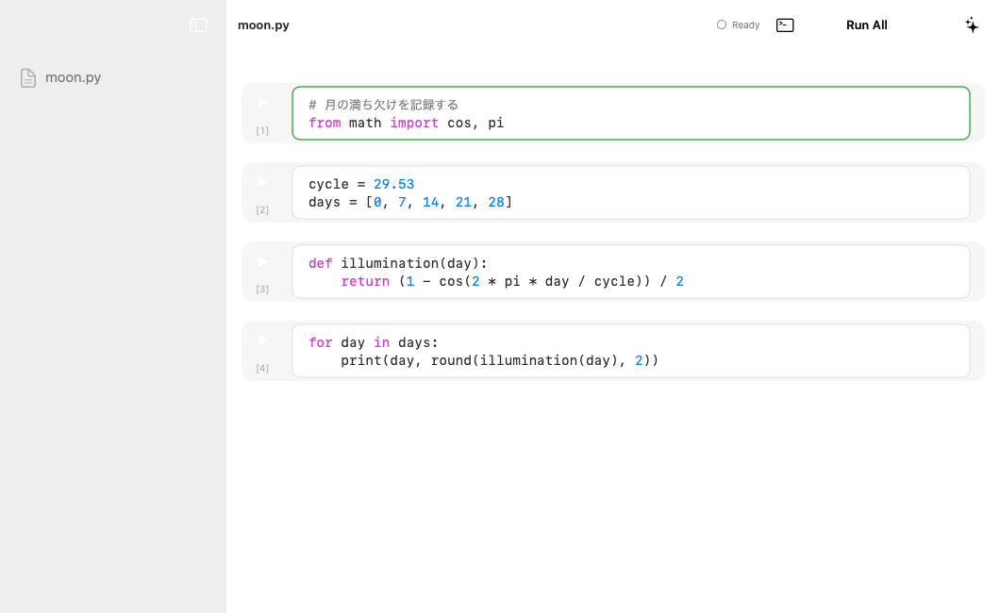
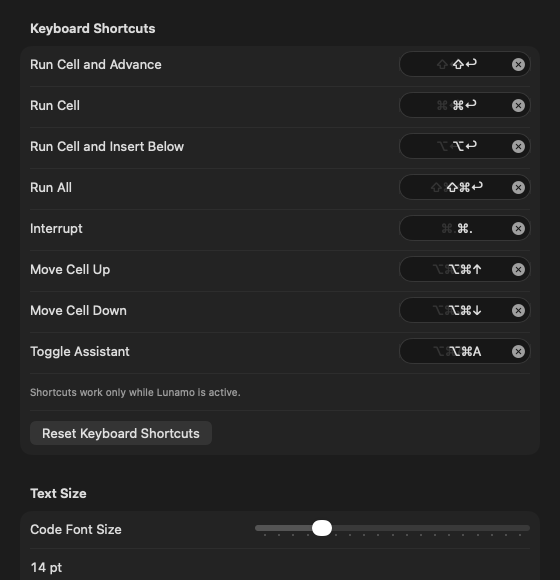

01
日本語を、変換の途中まで大切に。
セルの入力欄には、macOSのテキスト部品 NSTextView を使っています。「つき」を「月」に変換している間、ノートの再描画で入力中の文字を上書きしないようにしています。
SWIFTUI NOTEBOOK FOR MAC
marimoのノートを、Macのウィンドウで。
ファイルを開き、日本語でメモを書き、いつものキーで次のセルへ。Lunamoの編集画面はSwiftUIでつくりました。

DESIGN NOTES / 設計ノート
セルの入力欄には、macOSのテキスト部品 NSTextView を使っています。「つき」を「月」に変換している間、ノートの再描画で入力中の文字を上書きしないようにしています。
同じセルで結果を見るなら⌘ Return。次のセルに進むならShift Return。実行もセルの移動も、設定画面で自分の押しやすいキーに変更できます。

設定画面を開く ↗サイドバーにはウィンドウの背後が透けるMac標準の素材を使いました。ファイルを選んだらサイドバーを閉じて、ノートを広く使えます。
INSTALLATION
ダウンロードしたDMGを開き、Lunamoを「アプリケーション」にドラッグしてください。Pythonとmarimoは同梱しています。
リリース履歴を見る ↗